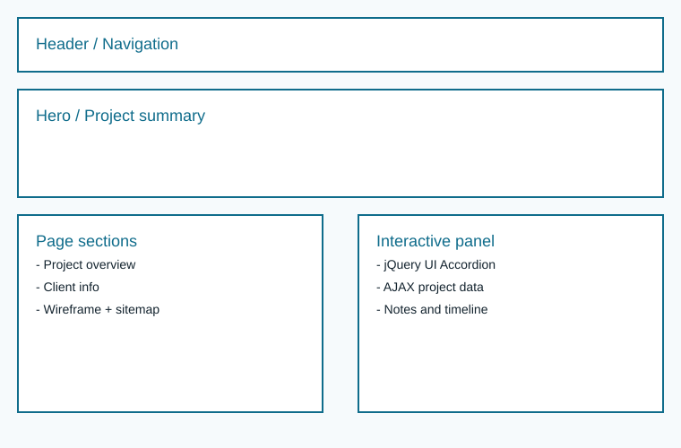
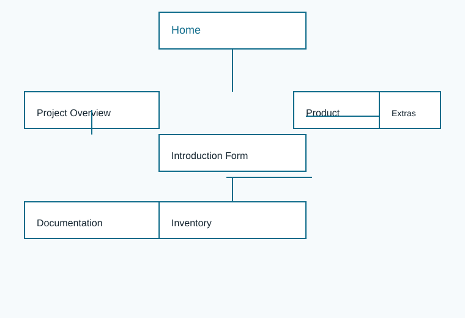

Project Overview
Project Overview
The Observant Kangaroo Community Hub is a responsive informational website designed for a small business and student project client. Its purpose is to improve stakeholder visibility, support community outreach, and teach basic web interaction through dynamic content and design documentation.
- Delivers business and project information clearly.
- Supports interactive learning without storing user data.
- Organizes navigation, forms, product listings, and documentation.
Intended Users
- Local customers looking for products and services.
- Community members interested in events and updates.
- Student learners reviewing the project requirements and design.
- Instructors and classmates evaluating the web application.
Website Content Overview
This site will include core content categories such as:
- About the client and project goals.
- Product and inventory information.
- Interactive forms for introductions and surveys.
- Documentation of design, requirements and evaluation.
- Client contact details and external resources.
Client Information
- Client Name
- Kelechi Otiocha
- Organization
- Observant Kangaroo's Outback Emporium
- [private]
- Phone
- [private]
Wireframe

Site Map

Page Design Summary
The site will include at least five pages with distinct purposes:
- Home - Introduces the stakeholder, highlights the project, and directs users to all major sections.
- Project Overview - Documents requirements, client information, site map, and dynamic plan details.
- Introduction Form - Collects visitor introduction details and demonstrates client-focused interaction.
- Product - Displays product or service details with a visual gallery and quick links.
- Inventory - Lists current items, categories, and interactive search/filter functionality.
Additional pages include documentation, survey feedback, and website evaluations.
Page Design Details
Home
Purpose: Welcome visitors and summarize the website. Audience: general users, clients, and instructors.
- Content: introduction, links to the site sections, and project highlights.
- Data input: no.
- Actions: navigate to child pages.
Project Overview
Purpose: Present project requirements and design document. Audience: clients, instructors, and evaluators.
- Content: overview, client details, wireframe, site map, page plans, and dynamic functionality.
- Data input: no user data required.
- Actions: view diagrams, load plan data via AJAX, and expand page details.
Introduction Form
Purpose: Capture visitor introduction details with form validation. Audience: interested users and clients.
- Content: name fields, bio, image upload, course section, and quotes.
- Data input: yes; required fields use validation.
- Actions: validate entries, display a generated summary, and reset the form.
Product
Purpose: Share product and service details. Audience: customers and supporters.
- Content: product descriptions, images, features, and links.
- Data input: no user entry required.
- Actions: navigate to product details and gallery items.
Inventory
Purpose: Present available inventory and expected items. Audience: customers, team members, and project reviewers.
- Content: item list, categories, and stock notes.
- Data input: search filters may use text entry.
- Actions: filter inventory, sort by category, and click for more information.
Dynamic Functionality
This page uses JavaScript for interactivity and AJAX to load supplemental project plan data. It also implements a jQuery UI accordion widget to present page design details clearly.
- AJAX: load project plan data from a JSON file and render it inside the page.
- jQuery UI: accordion widget for page design details and expandable content.
- Interactive diagrams: clickable wireframe and site map image links.
- Form interaction: planned validation and summary display on the Introduction Form page.
Example URLs for similar interactivity:
Live Project Plan Data
The data below is loaded dynamically from a JSON file using AJAX.
Notes
This page was built to support the ITIS 3135 assignment instructions by documenting the proposed project, the required pages, and planned interactivity. It includes local diagrams, a site map, and a clear content plan for the website.
Name: Kelechi Otiocha
Date: April 5, 2026
Time: 10:00 AM